About the project
Every business needs to reconcile their balance sheet to ensure correct reporting. Accountants need to know all the details about each client and do a lot of investigation and sense-checking to make sure the numbers are right. Given that every client is different, this job takes a lot of effort and requires several different tools. We at Mimo took a stab at simplifying this process by outsourcing the detective work to the smart workflow which does all the preparation in minutes and lets accountant review prepared results rather than doing all the work manually.
In parallel with developing a new design framework
The timing of this project overlapped with us developing new Mimo design framework. It was an enabler without which balance sheet reconciliation would've been less flexible and more linked to a concrete actions. Given that all accounting firms are different, and all their clients are different, we decided that it's not worth to design a product with hard constraints and agreed to use a new design framework to enable agentic design. As a bonus we got an opportunity to stress test it together with a product.
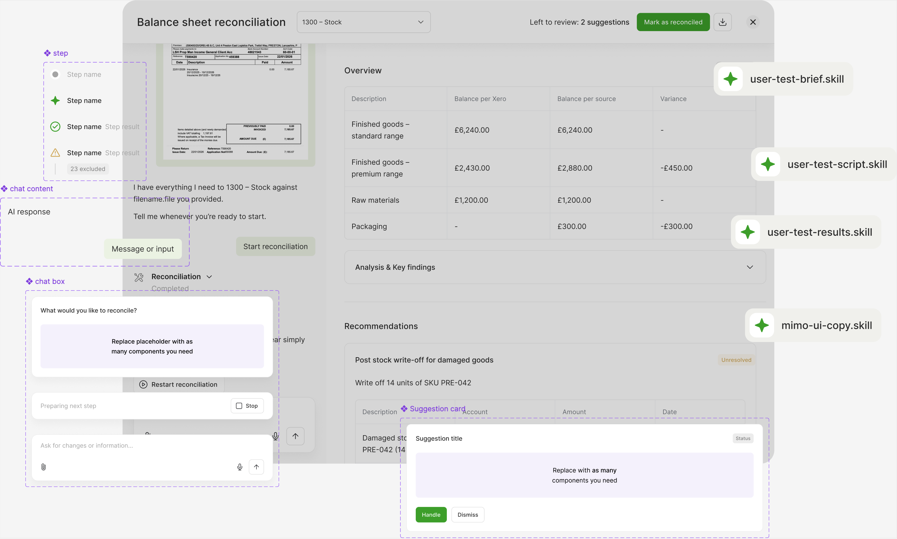
Discovery, discovery, discovery
First, we ran a couple of workshops to map out initial user flows and list key hypotheses for the balance sheet reconciliation. Since none of us worked as an accountant, we needed to paint a picture from scratch.
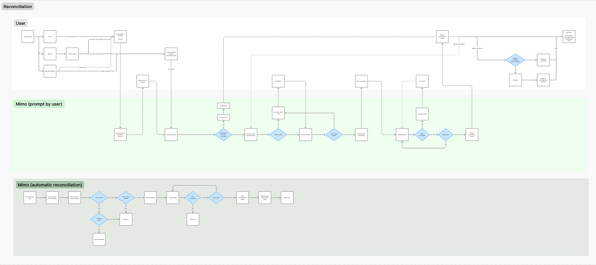
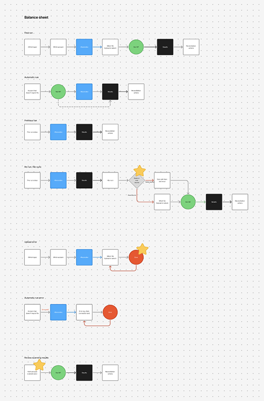
Next, we started to prepare for user testing. Initially we followed the traditional way and made quick Figma prototypes. After first round of internal discussions and testing with our partners we decided to try another approach and made a fully functional realistic claude prototype. 2 reasons behind that:
- The design framework was genuinely new, and some details and interactions needed careful testing
- It's hard to do a thorough tests with static data and mockups. Highly detailed realistic prototype decreases the risk of misunderstanding and lifts more concrete findings.
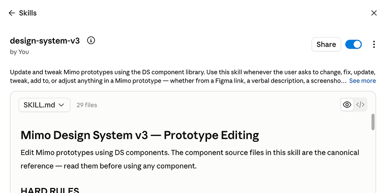
We conducted 6 testing sessions total. Some hypotheses were proven, some things needed to be rethought, but in the end we were happy with the solution.
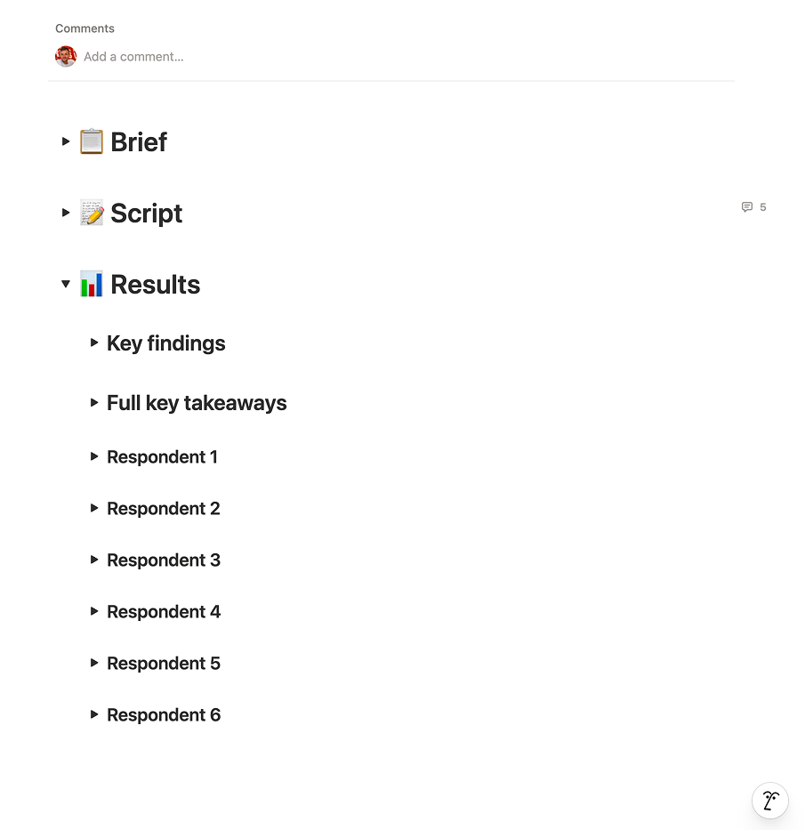
Development in parallel
Devs started implementation before we finished all the testing. This approach helped us speed things up: by the time we were done with the solutions, developers were ready to do the final polishing.
Launch and first results
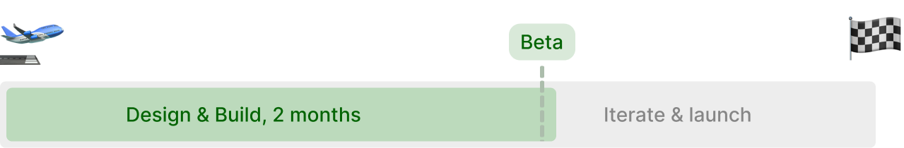
We opened a beta for our partners about 2 months after we started. First results were controversial: some things worked fine, some things needed tweaking. The solution itself was fine: nobody got confused in terms of where to go and what to click. The problem was in quality of the conversation and results reliability: it wasn't consistently good and sometimes went off-track. We took these learnings to rethink some parts of our product.
Iterations
We didn't take the beta down, but continued iterating on it. The pace was quite fast with the goal to deliver continuous fixes in 2 weeks. We also made some changes to the solution, and decided to start with the most demanded reconciliations instead of doing everything at once.
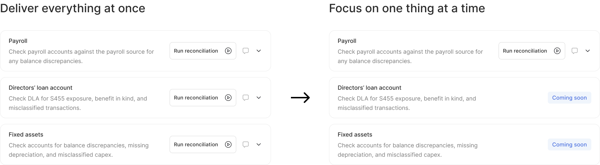
Done, but still ongoing
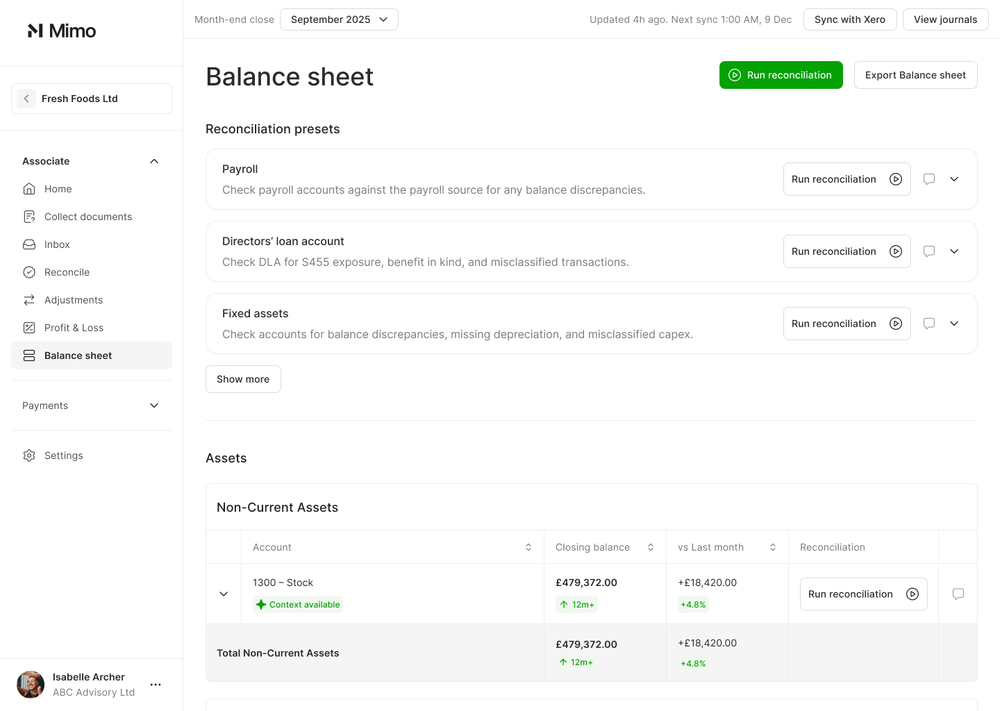
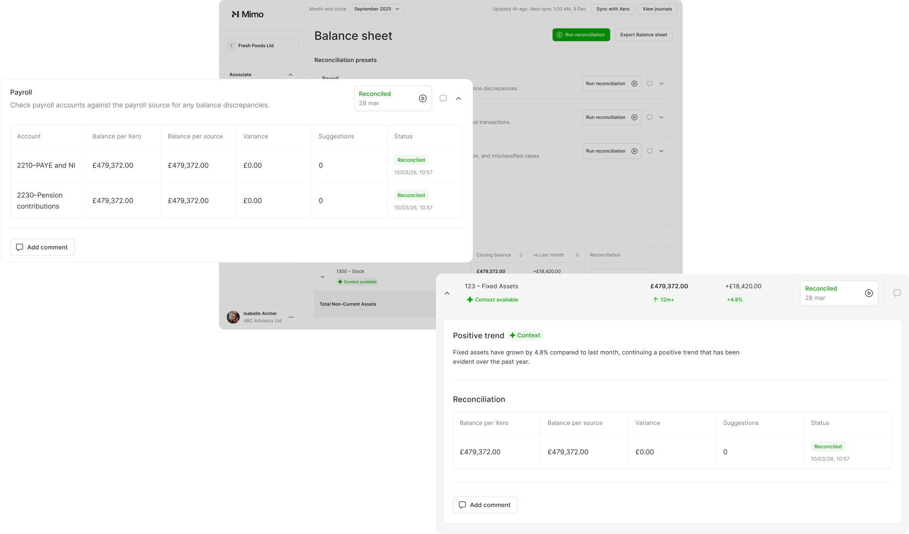
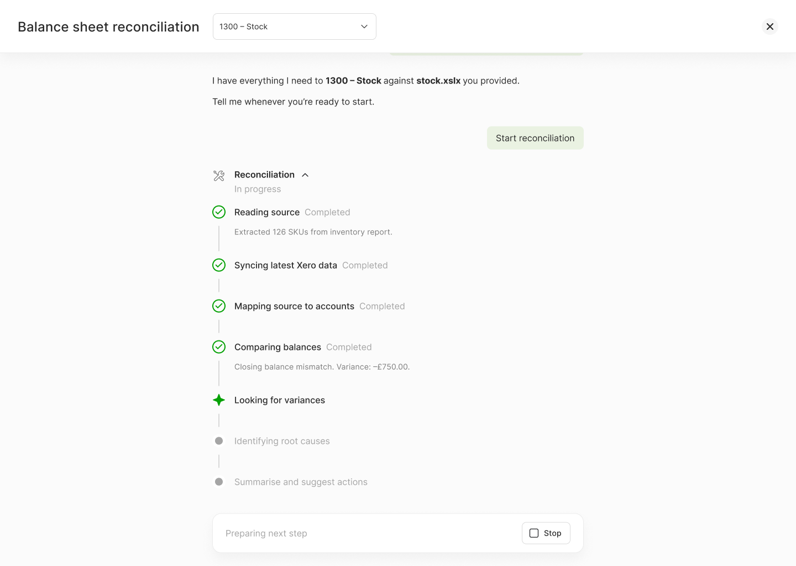
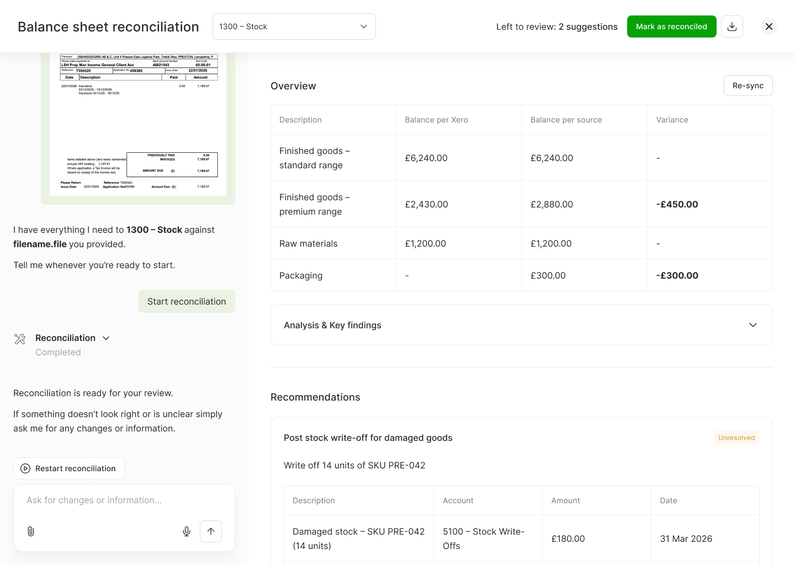
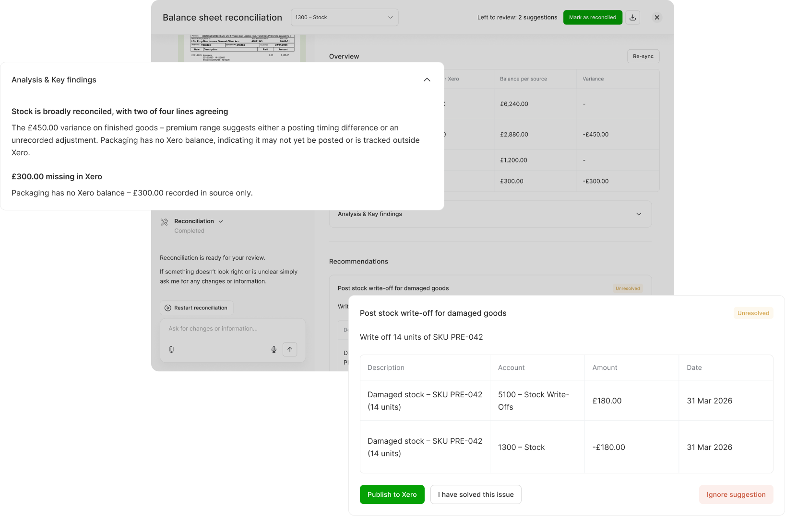
We continue working on the balance sheet reconciliation, focusing on batches of prioritized recs at a time.